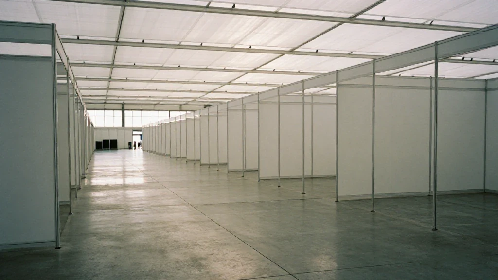
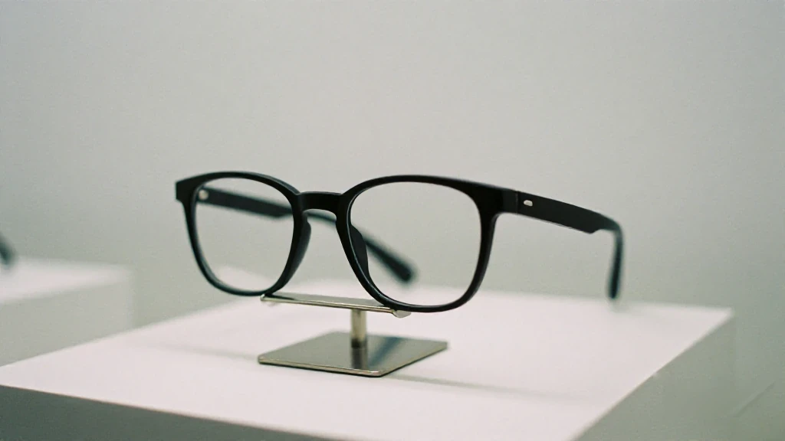
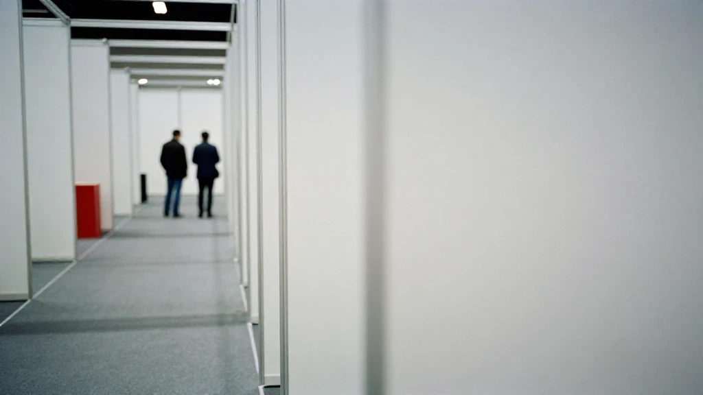
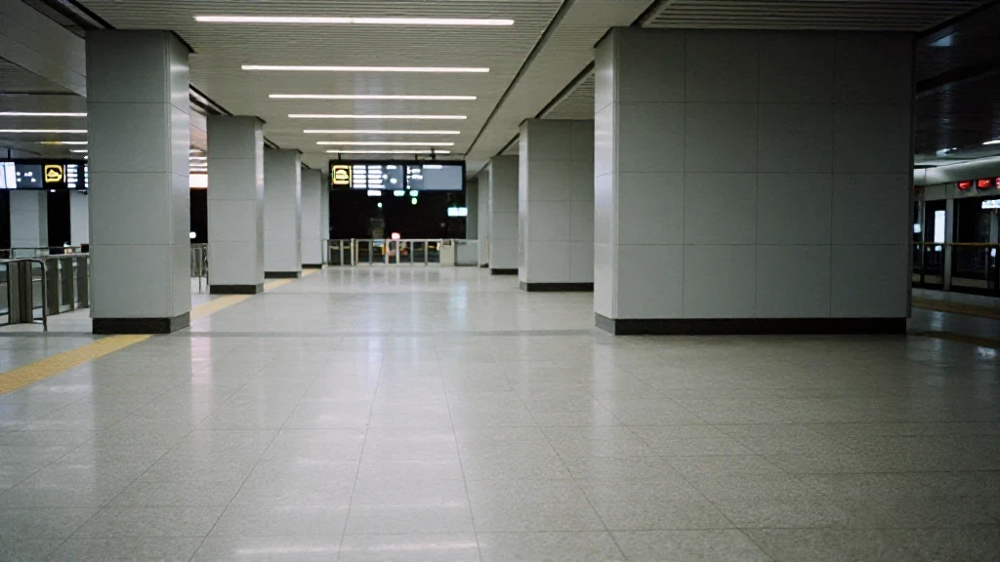

圖片由 AI輔助創作（Z-Image-Turbo）Image by AI (Z-Image-Turbo)
【鄭哥點評】
10月18日，第140屆廣交會，服務機器人展區。一個13歲廣東女仔，李若熙，以 IP GUANGDONG 創作者嘅身份，受廣交會官方邀請，再一次入場。佢喺一個中國製AI眼鏡嘅展位，同一個西班牙客商傾咗五分鐘。
呢個客商叫奧斯卡。佢講西班牙文，李若熙講中文，兩個人由頭到尾，冇一句話聽得明對方講乜。眼鏡將對方嘅說話譯成自己嘅母語，送到眼前。佢問奧斯卡食咗午飯未；奧斯卡答完，佢再問對方嚟咗中國幾日、覺得點。奧斯卡話鍾意中國，呢度嘅人友善、親切，天氣係熱咗啲、濕咗啲，但冇問題。兩個人就咁傾咗五分鐘。
五分鐘之後，奧斯卡講咗一句：「我們可以借助中國製造的AI眼鏡實現無障礙交流，給我留下深刻印象，非常棒。」李若熙就用英文答，大意係：唔同語言嘅人，各說各話都可以理解彼此，中國製嘅AI眼鏡可以幫做外貿嘅人溝通得好啲。
我唔識呢個女仔，亦唔打算評論佢。但佢嗰句英文，比大部分AI眼鏡嘅產品介紹都準。
呢單新聞本身唔大：一副眼鏡、五分鐘、兩個客商。但我覺得佢比好多「AI硬件出海」嘅大字標題有用，因為佢有場景、有人、有一句可以引嘅話。我睇到三樣嘢。
第一幕：眼鏡真正賣嘅，係信任

圖片由 AI輔助創作（Z-Image-Turbo）Image by AI (Z-Image-Turbo)
外貿場景裡面，語言不通只係表層障礙。真正嘅障礙係：兩種語言嘅人坐埋一齊，資訊唔對等，互相拿唔準對方係唔係靠譜。
AI眼鏡令兩個人可以即時聽到對方用母語講嘅反應。呢個唔係翻譯黑科技，係「我聽懂你，同時我都被你聽懂」嘅過程。奧斯卡嗰句「給我留下深刻印象」，本質上係講：我信呢個工具，我亦信用呢個工具同我傾偈嘅人。
我做外貿嗰陣，見客要帶翻譯。翻譯坐喺中間，客人對眼望住翻譯，唔係望住你。五分鐘之後，佢信翻譯，唔係信你。眼鏡唔同：中間冇人。你自己講，你自己聽，對方見到嘅係你。
所以呢副眼鏡賣嘅唔係「譯得準唔準」，係「唔使經第三者」。外貿最貴嘅成本，從來都係「唔知對方係邊個」。
第二幕：由「性價比」走到「場景感」

圖片由 AI輔助創作（Z-Image-Turbo）Image by AI (Z-Image-Turbo)
以前廣交會賣硬件，拼價錢、拼參數。同一個規格，邊個平，單就係邊個嘅。
而家賣AI眼鏡，賣嘅係一個具體場景：兩個人各說各話，居然聽得明。場景本身就係最有力嘅廣告，因為佢唔需要你信參數——你眼見佢發生。
我由九十年代做到而家，睇住中國出口走過幾個階段：代工拼人工，性價比拼供應鏈，到場景，拼嘅係「你估唔到佢做得到」。
場景感係定價權嘅來源。參數可以比，場景冇得比。
但有一句要講返：場景唔可以吹。展館唔係實驗室，五分鐘順暢，係真嘢；一條剪好嘅示範片，唔係。呢個分別，做外貿嘅人一試就知。
第三幕：改簽嗰十分鐘，同一句「如果唔係你」

圖片由 AI輔助創作（Z-Image-Turbo）Image by AI (Z-Image-Turbo)
前一晚，10月17日，李若熙同媽媽喺揭陽高鐵站等車去廣州。隔籬有兩個巴基斯坦客商，阿里同海德，都係去廣州參加廣交會。對方訂錯票：手上嘅係10月18日19:20嘅車，到站先發現係第二日。佢幫佢哋改簽到17號19:20，當晚到咗廣州。
第二日中午，喺展區再見，阿里專門行過嚟道謝，講咗一句：「非常感謝你昨天幫助了我們。如果不是你，我們今天也來不了廣交會現場。」佢兩個由2010年開始嚟廣交會，今年第16年。
改簽呢個動作，同賣乜嘢產品無關。但佢留喺客商心裡嘅印象，可能深過任何一場產品演示。一個嚟咗16年廣交會嘅人，唔會因為一副眼鏡記住一個展位；佢會因為有人幫佢改咗一張票，記住一個地方。
我做生意26年，愈做愈覺得：外貿拼到最後，拼嘅唔係產品，係人。產品可以換供應商，人唔可以。
改簽本身唔難，難係有人肯停低。
所以呢單新聞，我睇到嘅唔係「AI眼鏡好犀利」，係三樣嘢：眼鏡賣嘅係信任；中國硬件出口由性價比走到場景感；外貿拼到最後係人。三樣都唔新，但三樣同一日、同一個城市出現，就好難得。
如果你問我AI眼鏡幾時會大賣，我唔知。但如果你問我外貿下一個門檻喺邊，我會答：唔係價錢，係有冇一個場景，令人唔使經第三者都信你。
資料來源：廣州日報（廣州日報新花城）《廣東13歲女孩再闖廣交會 用中國AI眼鏡與西班牙客商「各說各話」實現無障礙交流》，記者周偉良，2026年10月18日。本文只引用該報道公開陳述的事實，其餘為鄭哥的個人觀察。
圖片由 AI輔助創作（Z-Image-Turbo）Image by AI (Z-Image-Turbo)
[Zheng Ge's Take]
On 18 October, at the 140th Canton Fair, in the service-robot hall. A 13-year-old girl from Guangdong, Li Ruoxi, is there as an IP GUANGDONG creator, invited by the fair itself, and it is not her first visit. She stops at a booth selling Chinese-made AI glasses and ends up talking with a Spanish buyer for five minutes.
His name is Oscar. He speaks Spanish and she speaks Chinese, and from beginning to end neither of them understands a word the other says. The glasses turn what the other person says into your own language and put it in front of your eyes. She asks whether he has had lunch; he answers, and she asks how many days he has been in China and how he is finding it. He says he likes China, that the people here are friendly and warm, that the weather is a little hot and a little humid but that it does not matter. They talk like that for five minutes.
Afterwards Oscar says this: "With Chinese-made AI glasses we can talk with no language barrier at all. It left a deep impression on me. Excellent." Li Ruoxi answers in English, the gist being that people who speak different languages can each speak their own and still understand one another, and that Chinese-made AI glasses can help people in export trade talk to each other more easily.
I do not know the girl and I am not going to comment on her. But that English sentence of hers is more accurate than most product copy written for AI glasses.
The news itself is small: one pair of glasses, five minutes, two buyers. It is more useful than most headlines about AI hardware going overseas, because it has a scene, it has people, and it has one line worth quoting. I took three things from it.
Act One: What the Glasses Really Sell Is Trust
圖片由 AI輔助創作（Z-Image-Turbo）Image by AI (Z-Image-Turbo)
In export trade, language is only the surface obstacle. The real obstacle is that two people who do not share a language sit down together with unequal information, each unable to tell whether the other is solid.
The glasses let both of them hear the other's reaction in their own language, immediately. That is not translation wizardry; it is the process of "I understand you, and I am being understood". Oscar's "it left a deep impression on me" is really saying: I trust this tool, and I trust the person using it to talk to me.
When I was in export, seeing a customer meant bringing an interpreter. The interpreter sits in the middle, and the customer's eyes go to the interpreter, not to you. Five minutes later he trusts the interpreter, not you. The glasses are different: there is nobody in the middle. You speak, you hear, and what the other person sees is you.
So what these glasses sell is not accuracy of translation. It is the absence of a third party. The most expensive cost in export trade has always been not knowing who you are dealing with.
Act Two: From "Cost-Performance" to "Scene"
圖片由 AI輔助創作（Z-Image-Turbo）Image by AI (Z-Image-Turbo)
In the old Canton Fair, hardware was sold on price and on specifications. Same specification, whoever is cheaper takes the order.
AI glasses are sold on a specific scene: two people each speaking their own language, and somehow understanding each other. The scene is the strongest advertisement there is, because it does not ask you to believe a specification sheet — you watch it happen.
I have been in this trade since the 1990s and I have watched Chinese exports move through stages: contract manufacturing competed on labour, cost-performance competed on supply chain, and the scene competes on "you did not think this was possible".
Scene is where pricing power comes from. Specifications can be compared. A scene cannot.
One qualification, though: a scene cannot be faked. An exhibition hall is not a laboratory. Five smooth minutes there is the real thing; an edited demo clip is not. Anyone who works in export knows the difference on the first try.
Act Three: Ten Minutes at a Ticket Counter, and One Sentence
圖片由 AI輔助創作（Z-Image-Turbo）Image by AI (Z-Image-Turbo)
The night before, on 17 October, Li Ruoxi and her mother were waiting at Jieyang high-speed rail station for the train to Guangzhou. Two Pakistani buyers were waiting there too — Ali and Haider, both on their way to the Canton Fair. They had booked the wrong tickets: the booking in hand was for 19:20 on 18 October, and they only found out at the station that it was for the next day. She helped them change it to 19:20 on the 17th, and they reached Guangzhou that night.
At noon the next day, in the hall, Ali came over to thank her: "Thank you very much for helping us yesterday. If it were not for you, we would not be at the fair today." The two of them have been coming to the Canton Fair since 2010 — sixteen years.
The ticket change had nothing to do with any product. But the impression it left may run deeper than any product demonstration. A man who has come to the fair for sixteen years will not remember a booth because of a pair of glasses; he will remember a place because someone changed a ticket for him.
Twenty-six years in business have taught me this: in the end export trade is not about product. It is about people. Products can be swapped for another supplier. People cannot.
Changing a ticket is not hard. Stopping to do it is.
So what I take from this story is not that the AI glasses are impressive. It is three things: the glasses sell trust; Chinese hardware exports have moved from cost-performance to scene; and export trade comes down to people. None of the three is new, but all three turning up in the same city on the same day is worth noting.
If you ask me when AI glasses will sell in volume, I do not know. If you ask me where the next threshold in export trade is, I would say: not price — whether there is a scene in which someone can trust you without going through a third party.
Source: Guangzhou Daily (Guangzhou Daily New Flower City), "Guangdong 13-year-old returns to the Canton Fair: Chinese AI glasses let her and a Spanish buyer 'each speak their own language' and understand each other", by Zhou Weiliang, 18 October 2026. This piece quotes only facts stated publicly in that report; everything else is Hany's own observation.